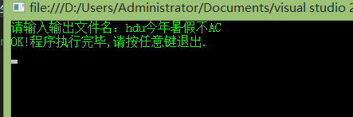
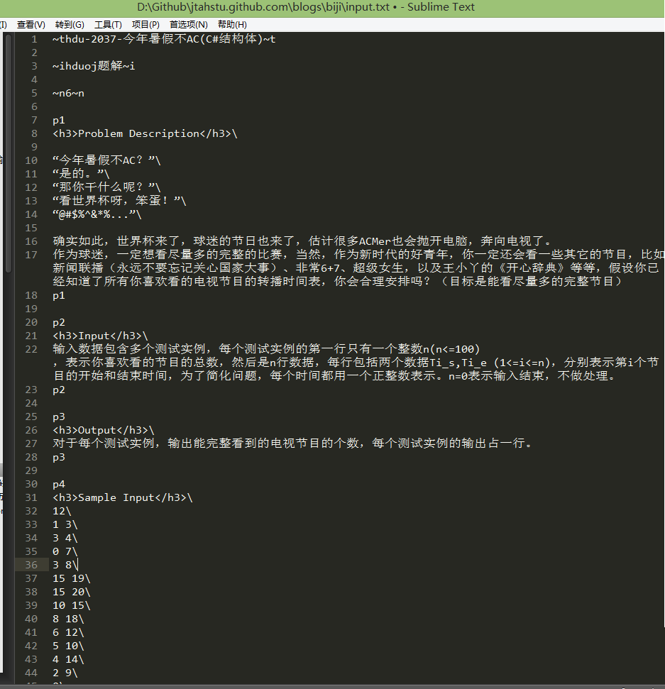
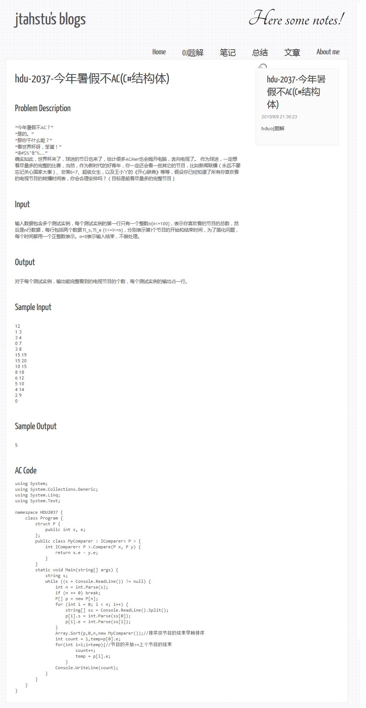

基于C#实现博客自动生成静态网页
程序基本思路：
本程序由一个模板文件和一个输入文件组成，模板文件含特定代码，所以在程序运行时可以精确地找到插入替换位置，然后读取输入文件，拿到特定的段落，替换之。
思路就是这个样子，应该不是很复杂。目前就是写出来然后节省一部分代码量，该程序还有许多限制，也就在我电脑上跑跑了。
本文就是这个程序跑出来的，然后修改了部分错误，大家感受一下。
Code:
using System;
using System.Collections.Generic;
using System.Linq;
using System.Text;
using System.IO;
namespace 博客笔记自动生成 {
class Program {
#region 写入标题,时间，简介
static void r_and_w_title(string file) {
var utf8WithBom = new System.Text.UTF8Encoding(true);
StreamReader reader = new StreamReader(@"D:\Github\jtahstu.github.com\blogs\biji\biji_Template.html", utf8WithBom);
String a = reader.ReadToEnd();
StreamReader reader_input = new StreamReader(@"D:\Github\jtahstu.github.com\blogs\biji\input.txt", utf8WithBom);
string input = reader_input.ReadToEnd();
reader.Close();
reader_input.Close();
//替换标题
int start = input.IndexOf("~t");
int end = input.IndexOf("~t", start + 2);
string s = input.Substring(start + 2, end - start - 2);
string ss = "$title$";
a = a.Replace(ss, s);
//替换时间
//int start2 = input.IndexOf("~d");
//int end2 = input.IndexOf("~d", start2 + 2);
//string s2 = input.Substring(start2 + 2, end2 - start2 - 2);
string s2 = DateTime.Now.ToString();
string ss2 = "$time$";
a = a.Replace(ss2, s2);
//替换简介
int start3 = input.IndexOf("~i");
int end3 = input.IndexOf("~i", start3 + 2);
string s3 = input.Substring(start3 + 2, end3 - start3 - 2);
string ss3 = "$info$";
a = a.Replace(ss3, s3);
//写入文件
string filename = @"D:\Github\jtahstu.github.com\blogs\biji\" + file + ".html";
StreamWriter readTxt = new StreamWriter(filename, false, utf8WithBom);
readTxt.Write(a);
readTxt.Flush();
readTxt.Close();
}
#endregion
#region 写入段落
static void r_and_w_p(string file) {
string filename = @"D:\Github\jtahstu.github.com\blogs\biji\" + file + ".html";
//设置文件编码为utf-8包含BOM
var utf8WithBom = new System.Text.UTF8Encoding(true);
//先读取模板文件
StreamReader reader = new StreamReader(filename, utf8WithBom);
String a = reader.ReadToEnd();
//然后读取输入文件
StreamReader reader_input = new StreamReader(@"D:\Github\jtahstu.github.com\blogs\biji\input.txt", utf8WithBom);
string input = reader_input.ReadToEnd();
int st = input.IndexOf("~n");
int en = input.IndexOf("~n", st + 2);
string stt = input.Substring(st + 2, en - st - 2);
int p_l = int.Parse(stt);
for (int i = 1; i <= p_l; i++) {
string ss = "p" + i.ToString();
int start = input.IndexOf(ss);
int end = input.IndexOf(ss, start + 2);
string s = input.Substring(start + 2, end - start - 2);//获取当前段落要替换的字符串
string sss = "$" + ss + "$";//模板中要替换的段落
a = a.Replace(sss, s);//执行替换操作
}
reader.Close();
reader_input.Close();
//执行删除多余的段落
for (int i = p_l + 1; i <= 30; i++) {
string ss = "< p >$p" + i.ToString() + "$< /p >";
a = a.Replace(ss, "");
}
//替换换行符
a = a.Replace("\\", "< br >");
//写入文件
StreamWriter readTxt = new StreamWriter(filename, false, utf8WithBom);
readTxt.Write(a);
readTxt.Flush();
readTxt.Close();
}
#endregion
#region 主函数
static void Main(string[] args) {
Console.Write("请输入输出文件名：");
string file = Console.ReadLine();
//执行读写操作
r_and_w_title(file);
r_and_w_p(file);
Console.WriteLine("OK!程序执行完毕,请按任意键退出.");
Console.ReadKey();
//File.Copy(@"change.html", @"HTMLPage1.html", true);
}
#endregion
}
}
运行图片：
执行程序

输入文件格式

输出文件效果
